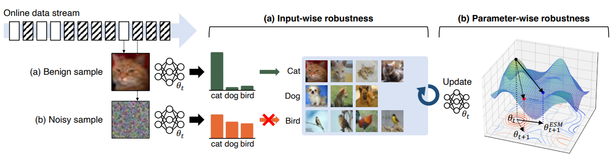

February 2025
I graduated from KAIST with Summa Cum Laude (First-Class Honors)
February 2025
I was selected for Outstanding Graduate (GPA) Award!
October 2024
I was selected for the College of Engineering (CoE) Leadership Award!
October 2024
I was selected for the College of Engineering (CoE) Leadership Award!
October 2024
I was on the Dean's List for the Spring Semester 2024 with a GPA of 4.16/4.30!
September 2024
My project won the Grand Prix (1st place) in the URP workshop!
July 2024
My URP project was selected for an oral presentation in the URP workshop!
June 2024
Our project, OceanSpace, was selected as one of the top 6 finalists in the Typhoon Hackathon 2024, Thailand!
January 2024
Our paper, AETTA, was accepted to CVPR 2024!
December 2023
I was selected to participate in the URP program!
September 2023
Our paper, SoTTA, was accepted to NeurIPS 2023!
June 2023
I joined Siam Commercial Bank (SCB) as a data scientist intern in credit risk team!
June 2022
I joined NMSL as an undergraduate researcher, working on HCI, Mobile Computing, and Machine Learning!
March 2021
I was on the Dean's List for the Fall Semester 2020 with a GPA of 4.27/4.30!
I am a fourth-year undergraduate student double majoring in Electrical Engineering and Computer Science at the Korea Advanced Institute of Science & Technology (KAIST). My research and professional interests span across machine learning, domain adaptation, personalized AI, and topics beyond supervised learning (semi-supervised learning, self-supervised learning, and unsupervised learning).
As an active researcher, I am working on innovative projects related to state-of-the-art technology in machine learning. Currently, I am exploring new opportunities that align with my passion and expertise.
Feel free to check out my Resume!
I have been deeply involved in end-to-end research across several fields, including Machine Learning, Mobile Systems, and Human-Computer Interaction. I have contributed to and played a significant role in advancing 7 research projects from ideation to paper-writing, three of which have led to publications in top-tier conferences.
Here are some of my research projects : AETTA, SoTTA, Attention
I led the 'Risk-Based Pricing and Cut-off Optimization' project in the Credit Risk Team. I developed an optimization solution using CVXPY and reinforcement learning, along with a novel multiplier grading system. This approach was mathematically shown to maximize Risk-Adjusted Return on Capital (RAROC), enhancing pricing and decision-making processes.
Overall GPA: 4.13/4.30
Summa Cum Laude (First-Class Honors)
Overall GPA: 3.98/4.00
2008 - 2017
|
SoTTA: Robust Test-Time Adaptation on Noisy Data Streams Taesik Gong*, Yewon Kim*, Taeckyung Lee*, Sorn Chottananurak, Sung-Ju Lee. In Advances in Neural Information Processing Systems (NeurIPS), 2023 * Equal Contribution. Acceptance Rate: 26.1%. [Paper] [Website] [Code] [Video/Poster]

|
Highest academic distinction for outstanding graduates, i.e., first-class honors.
Recognition of a graduate with one of the highest GPAs in the graduating class.
One of the top six projects among all participants.
The best project (1st-place) among all presented URP projects.
Top-selected undergraduate students at KAIST for outstanding academic publications.
Top 2% College of Engineering, KAIST. GPA: 4.16/4.30
Top-selected undergraduate students at KAIST to engage in active research activities.
Top 2% College of Engineering, KAIST. GPA: 4.27/4.30
Tuition fee and full amount of school support fees supported by Korea Government.
If you're into research, machine learning, or just want to chat about basketball, feel free to hit me up!